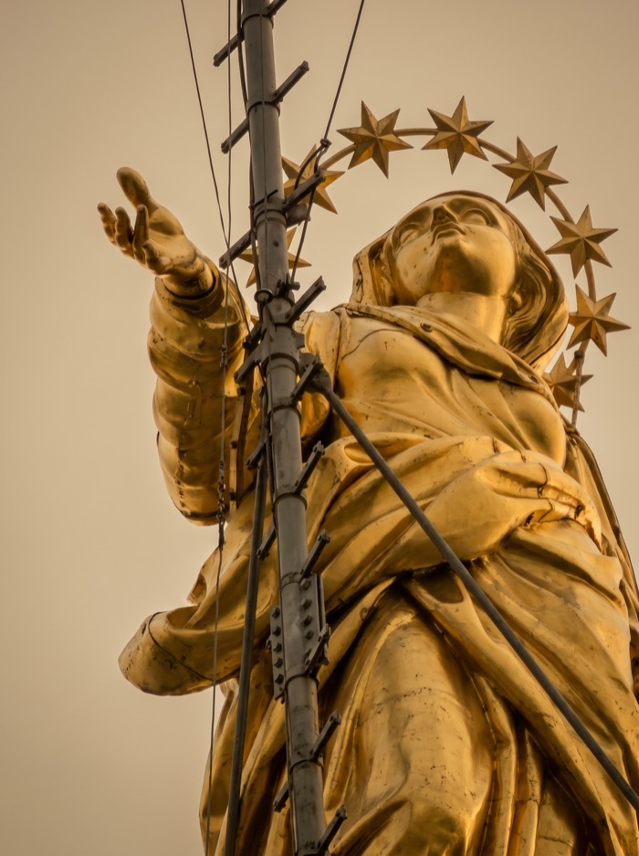
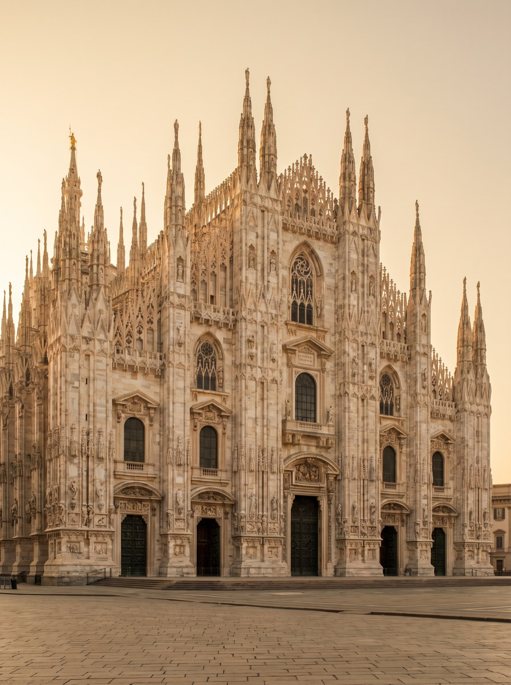
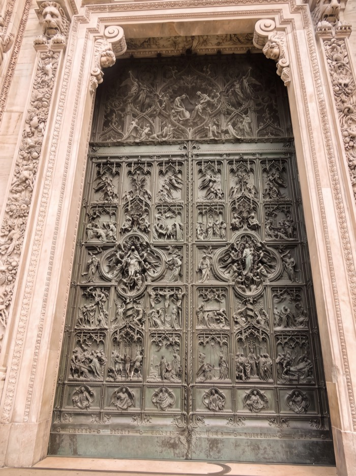

01
The Main Façade of the Duomo — history in stone
Duomo di Milano. One of the largest Gothic cathedrals in Europe and the foremost symbol of Milan. Construction began in 1386 and continued for almost six centuries.
The Main Façade0:00
Where is It?
In front of the main façade, Piazza del Duomo.
Interesting Facts
